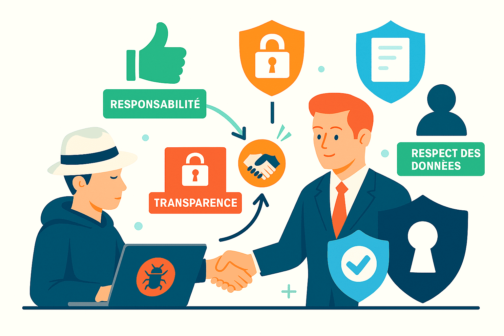
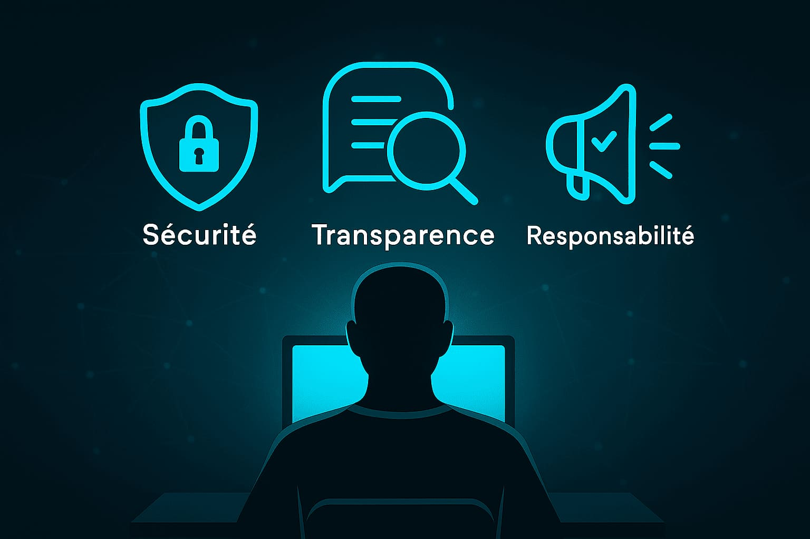
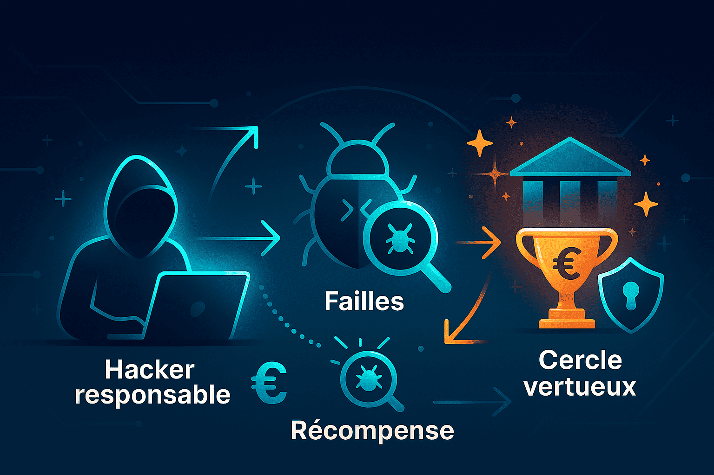
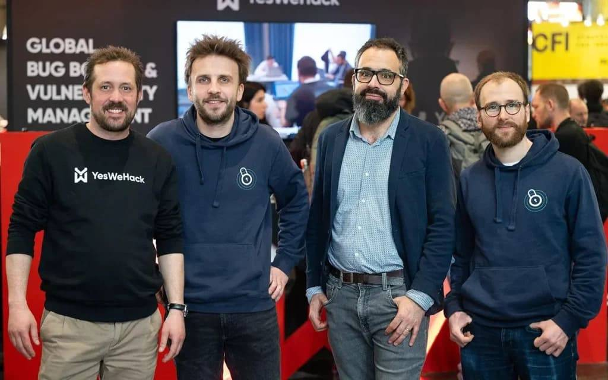

YesWeHack — l’éthique au service d’une sécurité durable.
Section éthique
Les "white hats" testent les systèmes pour détecter les failles avant les pirates.
Leur but : protéger les utilisateurs et renforcer la sécurité des entreprises.
En savoir +
Section introduction
YesWeHack met en avant les hackers responsables. Leur mission : trouver les failles avant qu’elles soient exploitées. Le hacking éthique = responsabilité, transparence et respect des données. Collaboration entre hackers et entreprises pour une cybersécurité plus forte.
Section principes
L’éthique du hacker s’appuie sur trois piliers :
- Respect : ne jamais exploiter ni divulguer les données.
- Transparence : signaler clairement les vulnérabilités.
- Divulgation responsable : informer sans nuire.
Section bénéfices

Le Bug Bounty de YesWeHack prouve que l’éthique peut être rentable.
Les hackers trouvent les failles, sont récompensés et les entreprises se protègent.
Un cercle vertueux : sécurité renforcée, reconnaissance des hackers.
En savoir +
Section cas pratiques
Depuis 2015, YesWeHack collabore avec des milliers de chercheurs. Leader européen, la plateforme place toujours l’éthique au cœur de la cybersécurité.
"L’éthique transforme le hacking en une force de protection."